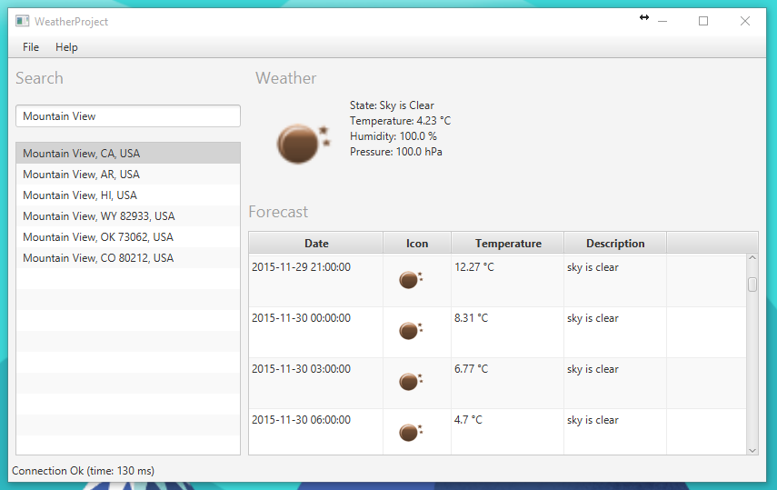
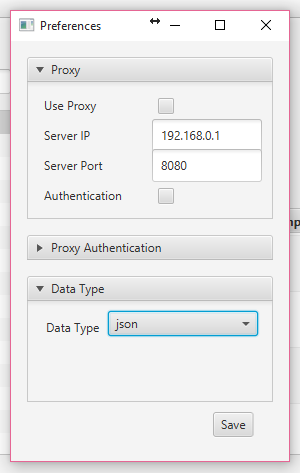
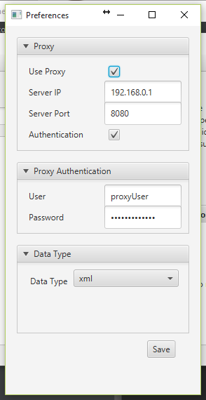

Welcome to WeatherProject website.
WeatherProject is a free software that retrives weather informations of a given address. It's easy and free to use! Download the executable or fork the project on GitHub
Installation
Install WeatherProject is very easy, you just need to install java and download the jar.zip. Once you've downloaded the jar.zip, hust unpack the jar and double click on it. If you're computer don't recognize the jar, just open a terminal and type 'java -jar WeatherProject.jar'.
Configuration
If you need to set a proxy server, you just need to go to the Files menu and then click 'Preferences'. Now set the proxy server ip and port and if it's necessary the authentication informations. Done, click save and enjoy the software!
Screenshots
Here are some screenshot of the software:
  More informations?
If you want to see more and detailed informations about the software, click here to go to the WeatherProject Official Wiki